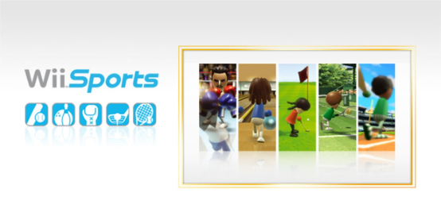
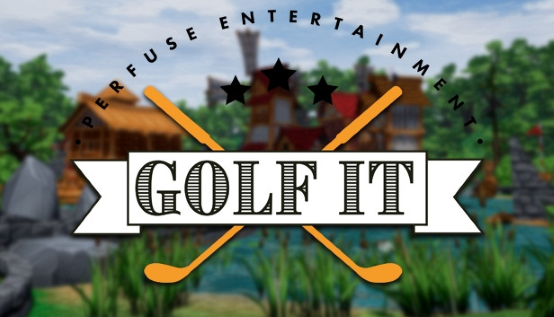
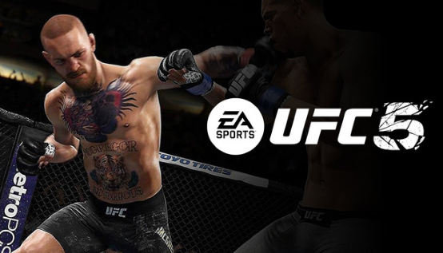

Deportes

Wii Sports
El juego es un simulador de cinco deportes, diseñado para demostrar las capacidades inalámbricas y sensoriales del mando de Wii a los nuevos jugadores. Los cinco deportes incluidos son tenis, béisbol, bolos, golf y boxeo. Los jugadores usan el mando de la consola para imitar los movimientos hechos en la vida real en esos deportes, como mover una raqueta de tenis. Las reglas de los juegos están simplificadas para hacerlas más accesibles a los nuevos jugadores. El juego también incluye un modo de entrenamiento que monitoriza el progreso del jugador en los deportes.
Hasta 35€
Golf It
¡Embárcate en un emocionante viaje con Golf It! Toma tu putter, reúne a tus amigos y sumérgete en una aventura épica de minigolf. Conquista innumerables campos, crea recuerdos duraderos y perfecciona tus habilidades para convertirte en el campeón de minigolf definitivo. ¡Tu emocionante odisea golfística comienza aquí!
Hasta 9€
UFC 5
EA SPORTS UFC 5 es tan real como la vida misma. Gracias a las funciones avanzadas de renderizado del motor Frostbite, tus estrellas favoritas cuentan con un realismo inigualable, lo que, unido a unos entornos fielmente recreados, hará que su paso por el Octágono transmita las mismas sensaciones que en un evento principal de PPV. El nuevo sistema de daño auténtico hace que la intensidad y la estrategia de un combate cobren realismo, ya que los cortes y los golpes recibidos pueden afectar a la movilidad, la defensa, la resistencia y mucho más. Si sufres demasiado daño, el médico comprobará si eres capaz de continuar. Para amantes de las técnicas de suelo, las nuevas sumisiones basadas en transiciones hacen que el grappling sea más fluido y realista que nunca. Y, si quieres admirar tu trabajo, las nuevas repeticiones cinemáticas de KO capturan tus finalizaciones de combate en todo su esplendor. Además, el calendario de servicios en directo se ha rediseñado por completo para traer desafíos emocionantes en cada semana de combate de PPV. Llévate a casa la evolución de los juegos de combate con UFC 5.